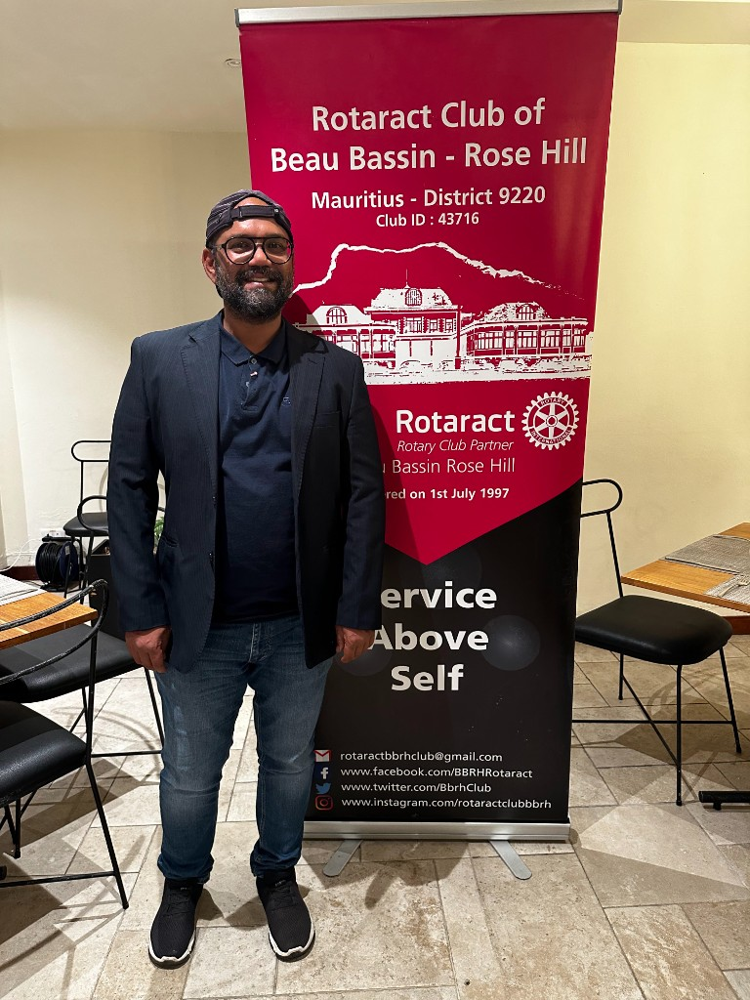
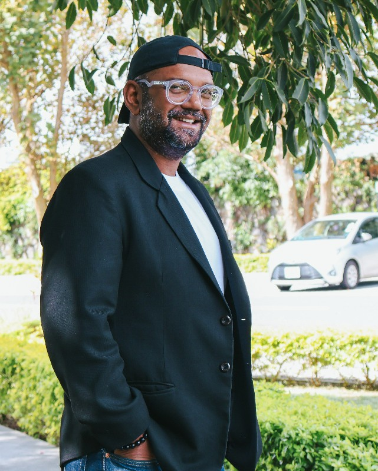

MBA · PMP · AI enthusiast · Product, data & operations
Sebastien Alessandro Arokeum
I lead AI-enabled delivery and go-to-market work with the discipline of a PMP and the curiosity of a practitioner—structuring pilots, unifying stakeholders, and shipping evidence-backed outcomes.
Seasoned professional with 15 years of cross-industry experience, including eight years in managerial roles. Proven ability to lead operations teams, identify improvement areas, and drive enhancements. Well-versed in marketing, operations, team management, business intelligence, and project management (PMP certified). Adaptable and eager to embrace technological advancements—especially artificial intelligence.
This site is deliberately lightweight: it was first assembled in under an hour using an AI-assisted workflow—so the site itself reflects how I collaborate with modern tooling, not only what I write about it.
Project management & delivery
PMP-certified, with deep experience running hybrid Agile delivery—backlogs, stakeholders, and measurable outcomes across marketing ops, digital services, and complex multi-team initiatives.
-
Structure under pressure
Roadmaps, one-week sprints where appropriate, clear user stories, and success metrics—tailoring Scrum, Kanban, or hybrid models to the client and risk profile.
-
Large-scale coordination
Led coordination for a global Generative AI pilot: 35 discussion groups and 400+ pilot users, channelling qualitative feedback and survey data into executive-ready conclusions.
-
Operations & governance
Former Director of Marketing and Advertising Operations at Jabmo (Mar 2019 – Dec 2022): Mauritius office leadership, KPI design, cross-channel AdOps at scale (including $2M+ media governance), SOPs, and vendor relationships—aligned with my CV (2025 v2).
-
Sustainability & ratings research
Earlier role as Sustainability Analyst at EcoVadis (Jan 2017 – Feb 2019, per CV 2025 v2): reviewed management systems of multiple companies and analysed corporate sustainability data against a defined rating methodology.
-
Product & engineering partnership
Acted as project manager and liaison on a mobile app built from scratch—surfacing spec ambiguities, mediating blockers, testing rigorously, and documenting outcomes (see Fabian Mösli's recommendation below).
AI, analytics & technical depth
As Business Analyst (expanded remit — Product, Data & Ops) at EKIUM AMIO (Jan 2024 – present), I own product and delivery cadence, AI-powered workstreams, business modeling, and GTM-oriented strategy work—bridging business intent with technical feasibility.
Stack & tools (CV 2025 v2): Tableau, Amazon QuickSight, Excel, Google Analytics, Power BI / Fabric, Dataflows, SQL, Python, Jira, Confluence, Wrike, Business Central, Facebook advertising, LinkedIn advertising, Xandr Invest (AppNexus), Microsoft advertising, Google Ads, ChatGPT, HubSpot, Cursor, Replit—and problem solving with common sense to resolve messy situations with minimal resources.
-
Generative AI in practice
GenAI use-case discovery, prompt design, ROI and readiness assessments; hands-on work structuring pilot findings with LLM-assisted analysis and rigorous reporting.
-
Data stack
SQL, Power BI / Fabric, business intelligence reporting, and integration patterns (e.g. ERP and operational data sources)—turning raw signals into decisions.
-
Modern tooling
Productivity and delivery tools including Jira, Confluence, ChatGPT, and AI-assisted IDEs—used to shorten feedback loops without cutting corners on quality.
-
Long-run technical fluency
Full-time Python full-stack bootcamp at Developer's Institute (Jan 2023 – Mar 2023, per CV 2025 v2); plus early formal strength in Mathematics and Computing (A-Level) and complementary sciences—useful grounding for statistical and systems thinking around AI.
Work experience
Full work history from my CV (2025 v2), most recent first—every role and bullet as listed there (including The BrandHouse, EcoVadis, InterActive, and earlier editorial roles). Client outcomes (e.g. ILO GenAI pilot, mobile app delivery) also appear under key project engagements below, in recommendations, and on LinkedIn.
-
EKIUM AMIO — Business Analyst (expanded remit — Product, Data & Ops) · Jan 2024 – Present
- Product & delivery: Own roadmap/backlog; run one-week Agile sprints; define user stories, acceptance criteria, and measurable success metrics.
- AI product ownership: Lead an AI-powered workstream (LLM workflows, retrieval, automation); translate leadership vision into executable roadmaps.
- Market & GTM: Conduct opportunity sizing, competitor mapping, positioning, and pricing; advise business, sales, and marketing strategy; convert insights into focused launch plans.
- Business modeling: Build cost/revenue models, unit economics, and scenarios; craft customer value propositions and Business Model Canvas.
- Metrics: Define product health metrics and a lightweight KPI review cadence to drive outcome-focused delivery.
- AI for business: Track trends; map value streams, select use cases, assess data readiness and risk; prioritize high-ROI automation and insight generation.
- Consulting: Support client projects, including AI advisory.
- The BrandHouse — E-Commerce Manager · Nov 2023 – Dec 2023
-
SIRUD — Data and Commercial Analyst · Jun 2023 – Oct 2023
- Set up business intelligence reporting processes.
- Develop datasets from Microsoft Business Central.
- Write new custom queries in AL.
- Develop BI reports using Power BI and Fabric.
- Review Microsoft Business Central for data gaps.
- Find business insights.
- Respond to operational data needs across the business.
-
Jabmo — Director of Marketing and Advertising Operations · Mar 2019 – Dec 2022
Mauritius office administration and operations
- Managing Mauritius office day-to-day operations, including supplier relationships and procurement.
- On-site HR and IT technician.
- Identify business needs; plan and execute action plans.
- Business process engineering—review current processes, establish more efficient ones, and create new procedures.
- Team capacity building and coaching.
Marketing and advertising operations
- Managed ABM marketing campaigns for Jabmo clients.
- Oversee performance reports and manage targets.
- Establish KPIs and design reports for monitoring.
- Reporting and troubleshooting of campaigns on programmatic platforms Xandr Invest (AppNexus), Meta, LinkedIn, Google, and Microsoft.
- Planning and balancing workload across teams.
- Oversee deployment of marketing campaigns for a global client base.
- Cost management and budget monitoring of cross-channel marketing activities.
- Subject matter expert for ABM advertising operations on Facebook, LinkedIn, Google, Microsoft, and Xandr Invest—over $2M USD media spend cross-channel.
- Act as product owner with the dev team to develop new features (JIRA and Wrike).
- Collaborate with developers to create efficient ad marketing tools.
-
EcoVadis — Sustainability Analyst · Jan 2017 – Feb 2019
- Review management systems of various companies and analyze corporate sustainability data per the given rating methodology.
-
InterActive — Corporate Performance Analyst · Jun 2015 – Dec 2016
- Set up a performance reporting system.
- Preparation and calculation of performance indicators.
- Analyze performance issues for management.
- Prepare reports in Tableau.
- Coordinate KPI reporting implementation in cross-functional teams.
- Marketing budget preparation and forecasting.
- Pipeline analysis.
-
InterActive — Business Development Executive · Mar 2014 – Jun 2015
- Present 100% online learning concept.
- Develop new strategies for different markets in Africa.
- Market research.
-
InterActive — Senior Admissions Supervisor · Nov 2009 – Mar 2014
- Build, set up, and run the admissions department for online master's programs.
- ROSEMEES CO LTD — Web editor, copywriter, proofreader · Jul 2009 – Nov 2009
-
SEDECO — Web editor · Jul 2008 – Dec 2008
- SEO copywriting.
- MAERSK — Documentation assistant · Apr 2004 – Sep 2004
Key project engagements
Client and delivery highlights that complement the employer timeline above (detail on LinkedIn recommendations).
-
Generative AI global pilot — International Labour Office (ILO)
Coordinated 35 discussion groups and 400+ users worldwide; developed an analytical model using ChatGPT to extract actionable insights; authored the strategic final report. -
Mobile app development — Scratch-to-launch
Lead project manager and developer liaison; structural discipline, resolution of specification ambiguities, and end-to-end testing and documentation.
What people say on LinkedIn
Excerpts from public recommendations on my profile—covering GenAI pilots, mobile delivery, engineering collaboration, and large-team operations.
I had the pleasure of working with Sébastien Arokeum on a pilot project focused on Generative AI. He joined the team after the initial set-up phase and quickly established himself as a key contributor. From the outset, Sébastien took on the crucial role of coordinating and energizing 35 discussion groups, engaging over 400 pilot users from around the world in meaningful exchanges about their experiences with the project.
Sébastien played a central role in refining and improving the project's evaluation framework, including the design of the end-of-project survey. He skillfully combined qualitative analysis of user discussions with quantitative survey data, providing a comprehensive view of the pilot's outcomes.
One of his key contributions was the development of an analytical model using ChatGPT, which helped structure the findings and extract actionable insights. He also authored the final report, which was clear, well-organized, and rich with practical recommendations that directly informed our next steps.
Throughout the project, Sébastien consistently demonstrated professionalism, flexibility, and a strong sense of ownership. He was always available when needed, proactive in offering solutions, and thoughtful in his analysis. His ability to engage diverse stakeholders and synthesize complex information was invaluable to the success of the initiative.
I highly recommend Sébastien for any role involving digital innovation, applied research, or global community engagement. He brings a rare combination of analytical rigor, communication skills, and collaborative spirit.
Sebastien acted as project manager and liaison between us and a mobile app developer for an app that we built from scratch. He brought structure to the process, reminded us in a friendly but firm manner of outstanding tasks, uncovered ambiguities in our specifications, mediated when problems arose, and diligently tested and documented everything. He often contributed his own useful observations and ideas to improve our product. Working with him was a pleasure.
I had the pleasure of working with Seb throughout my entire tenure at Jabmo. In fact, my very first impression was formed even before I joined the company: during my evaluation process, I attended the weekly Marketing Operations meeting that Seb lead. His ability to grasp and clearly present complex, voluminous data was evident from the start. Over time, I learned that not only did Seb possess a strong command of the material he was presenting, but that he had an intimate understanding of multi-channel advertising operations in general, and the art of campaign management to achieve desired results in particular. He instilled this knowledge in his team, leading by example and drafting comprehensive documentation of standard operating procedures for all scenarios.
In my role as head of Engineering, Seb was my first and best customer, presenting requirements and priorities succinctly, and providing timely feedback for fluid iterations that lead to rapid delivery. While he never lacked for new ideas, Seb intuitively grasped the MVP concept and maintained a keen business sense. The product was better because of him.
Last but certainly not least, Seb is a great all-around leader. He managed the entire Mauritius office—the physical space and personnel—while also taking care of hands-on AdOps work. I had the great fortune to visit and work in that office for a short time, and Seb's love for his job and his people were palpable. He is looked up to, and rightly so. He'll be a strong addition to any organization.
I had the privilege of working closely with Sebastien Arokeum for over 3 years at Jabmo. I am highly impressed with his management of Jabmo's large operations team in Mauritius. He is a fair manager and a passionate leader - his focus keeps the division running smoothly.
I appreciate his strong organizational skills, his adherence and enforcement of company policies, all while being adaptable with a heart for process improvement. He is positive, helpful, and never hesitated to provide support to me and our clients. I leaned on him regularly for his deep technical background in programmatic advertising and his many other strengths such as troubleshooting, creating SOPs, and organizing team training workshops.
Seb is one of the most dedicated professionals I have ever worked with. Seb will be a valuable asset to any company.
I had the privilege of working alongside Sebastien "Seb" at JABMO. He managed our marketing operational team. He always acted with urgency and was completely dedicated to mastering all requirements. Seb is highly organized and detailed and continuously learns; eventually becoming a repository of industry knowledge. He is able to summarize, prioritize and execute on client priorities. Seb is highly respected by his team. I recommend partnering with Seb if you are looking to strengthen your operations.
Additional recommenders on LinkedIn include Eric Quick, Zaid Hoossainsaeb, and others—covering leadership, analytics, and client outcomes. See all recommendations on LinkedIn
Education
Formal degrees and the coding bootcamp below—date ranges align with CV (2025 v2) where shown; professional licenses and certifications are listed separately.
- MBA — Commonwealth Executive MBA, Open University of Mauritius (2013–2016) · credential year often cited as 2016
- Full-time full-stack bootcamp (Python) — Developer's Institute, Mauritius (Jan 2023 – Mar 2023)
- BSc (Hons) Psychology — University of Mauritius (2005–2008)
- Higher School Certificate (HSC) — St Joseph's College (2001–2003): Mathematics A, Economics C, Computing B
- School Certificate (SC) — St Joseph's College (1996–2001) · overall grade: 13 units · including Mathematics, Additional Mathematics, Computer Studies
Scanned certificates appear above for select qualifications; credential IDs and verification links are available on LinkedIn where applicable.
Licenses & certifications
PMI credentials first, then marketing and advertising-platform certifications. LinkedIn Learning completions are grouped in an expandable list.
Project Management Institute
CV (2025 v2) summarises PMP as issued July 2024, valid through July 2027; additional PMI credentials below are retained from my full credential record.
- Value Stream Management — Project Management Institute · Issued Aug 2025
- Project Management Professional (PMP)® — Project Management Institute · Issued Jul 2024 · Expires Jul 2027
Marketing, analytics & advertising platforms
- ABM Certification: Advanced Course — Demandbase · Issued Jan 2023
- ABX Digital Advertising Specialist — Demandbase · Issued Jan 2023
- ABM Certification: Foundations Course — Demandbase · Issued Dec 2022
- Google Analytics Individual Qualification — Google · Issued Aug 2022
- The Trade Desk Edge Academy Certified: Executive Program — The Trade Desk · Issued Mar 2022
- Be personal and efficient with human support — Intercom · Issued Dec 2021
- Sprinklr Media Planner Pro — Sprinklr · Issued Mar 2021
- Xandr Invest: Invest DSP Certificate — Xandr · Issued Jan 2021
Volunteering
Rotaract Club of Beau Bassin/Rose Hill — community and social-service work alongside professionals and volunteers in the Beau Bassin / Rose Hill area (Rotary-affiliated programme).

- Director of Projects — Jun 2024 – present · Overseeing project planning and execution for club social-service initiatives.
- Member — Oct 2021 – present · Contributing to social services and club activities.
Beyond the desk
Smart-casual and event moments—outdoor settings, professional socials, and everyday energy. Open the full gallery for travel, beaches, hiking, and more.

Contact
Recruiters and collaborators: the fastest paths are LinkedIn or email—I respond promptly to serious enquiries about AI-enabled programmes, agile delivery, and commercial analytics roles.
- LinkedIn Sebastien Alessandro Arokeum
- Email sebastien.arokeum@gmail.com
- Phone +230 5724 1257
- Location Roches Brunes, Beau Bassin, Plaines Wilhems, Mauritius (CV 2025 v2)